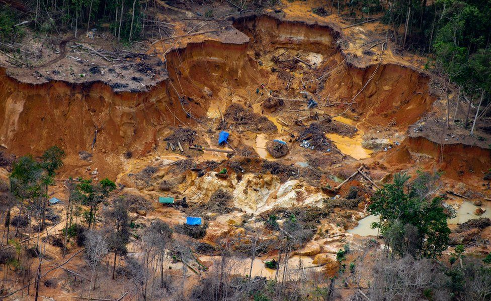

Bedreigingen
De Amazone regenwoud wordt bedreigd, het wordt gekapt voor veeteelt, landbouw en soja- palmolie plantages, er wordt ook gekapt voor hout en papier. Als er een stuk van het woud wordt gekapt, dan kan er later moeilijk nieuwe planten en bomen groeien omdat de kringloop wordt verstoord, de bodem is dan niet meer vruchtbaar. In de afgelopen vijftig jaar is ongeveer twintig procent van het Amazonewoud gekapt.
Er zijn nog veel meer manieren waar de Amazone door wordt bedreigd zoals: bosbranden, vervuiling door illegaal goudzoeken, dammen op de rivieren, en de bewoners worden vaak bedreigd of onderdrukt en zelfs af en toe vermoord.
De Amazone is belangrijk omdat er veel dieren en planten wonen. Veel daarvan worden bedreigd. De Amazone wordt ook de longen van de aarde genoemd, het zorgt dat de lucht schoon blijft. De bomen in het woud slaan veel koolstofdioxide op, als de bomen worden gekapt, dan komt de koolstofdioxide weer vrij, dat is een ramp zijn voor de milieu.